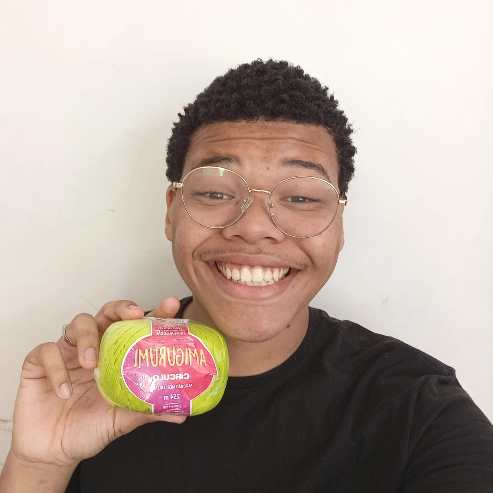

Serviços



Produção artesanal personalizada, encomendas sob medida e envio para todo o Brasil 🇧🇷
Meu nome é Irlan de Jesus, tenho 19 anos e concluí o ensino médio recentemente. Desde pequeno sempre fui criativo e comunicativo, e isso só aumentou com o tempo.
Cresci vendo minha mãe fazer crochê, o que despertou meu interesse, e em 2024 comecei a aprender. Em 2025, familiares e conhecidos passaram a incentivar a venda das minhas peças, e então comecei a produzir amigurumis, peças em crochê e ecobags, evoluindo cada vez mais com a prática.
A Artilan nasceu para transformar momentos especiais, como aniversários, chá de bebê e casamentos, em lembranças únicas através do crochê feito à mão. O nome surgiu da união entre arte e meu nome, Irlan.
Hoje, meu objetivo é fazer a Artilan crescer ao ponto de poder viver do trabalho das minhas próprias mãos.
A Artilan surgiu de um desejo simples: criar peças que transmitissem afeto. O artesanal não é apenas técnica é tempo dedicado, escolha consciente e acabamento feito com intenção.
Cada peça nasce de um processo feito com calma e cuidado, pensando não apenas no produto, mas na emoção de quem recebe. São itens criados para marcar momentos, decorar espaços e guardar lembranças.
Na Artilan, cada peça nasce do encontro entre criatividade, cuidado e o desejo de transformar momentos especiais em lembranças que permanecem. Produzimos itens em crochê feitos à mão, pensados para encantar, presentear e marcar ocasiões importantes:
Atendemos encomendas para aniversários, chá de bebê, casamentos, datas comemorativas e presentes personalizados, sempre buscando transformar cada pedido em uma peça única, feita com carinho e atenção aos detalhes.
Produção artesanal personalizada, encomendas sob medida e envio para todo o Brasil 🇧🇷